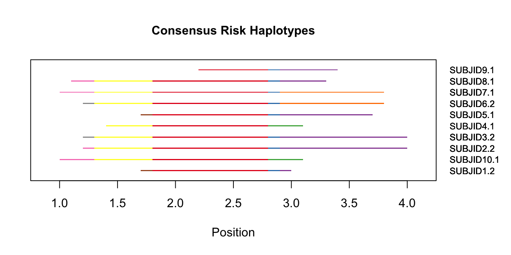
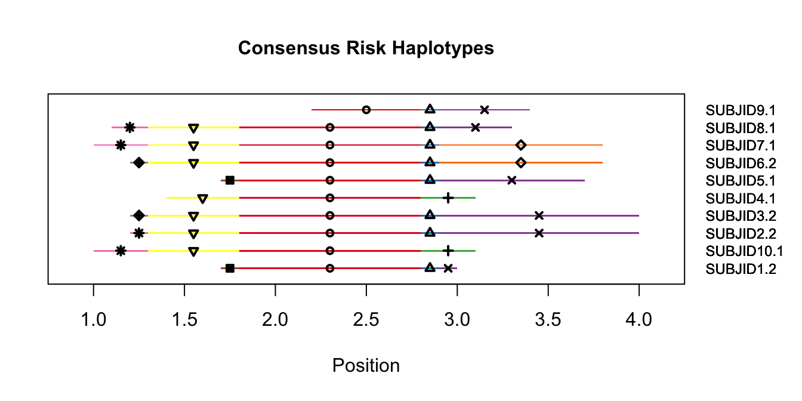
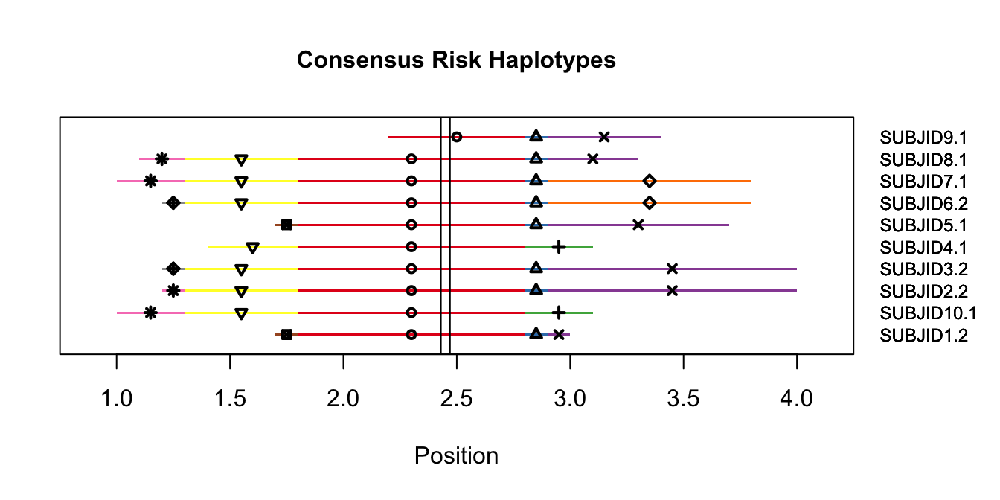
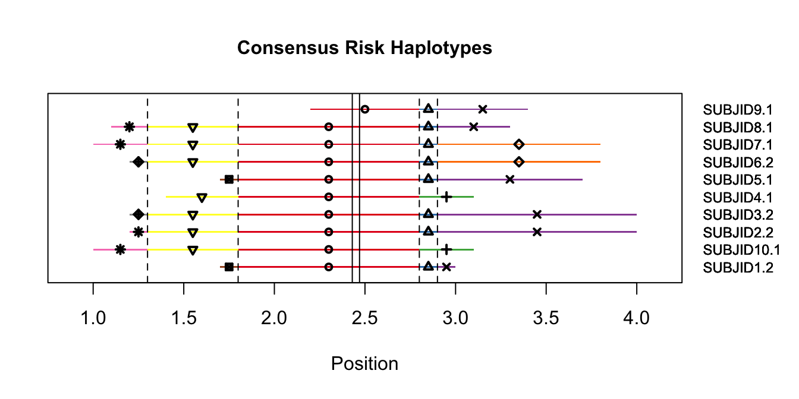
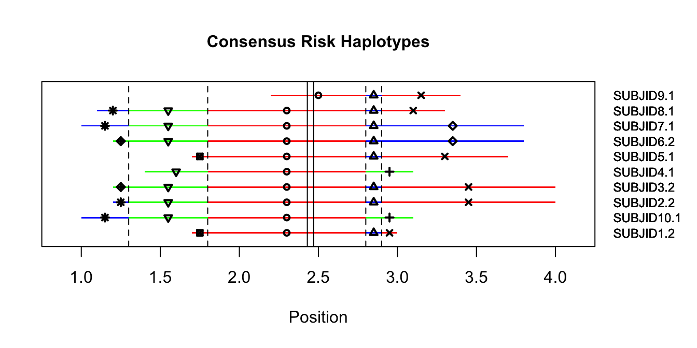
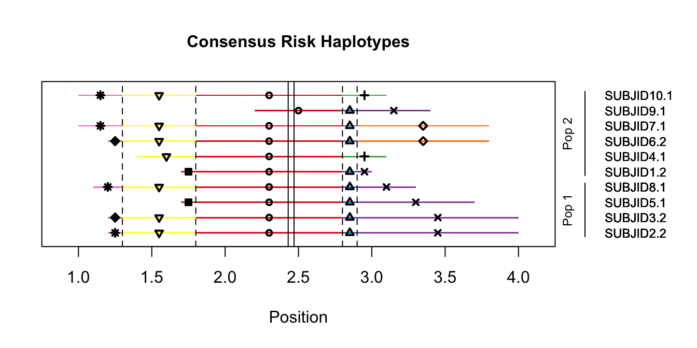
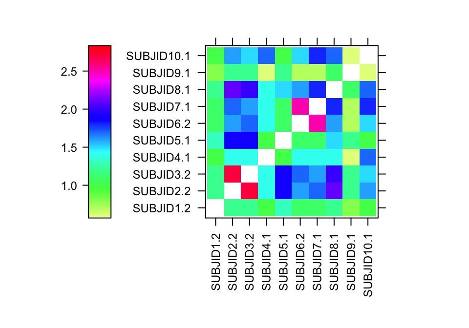
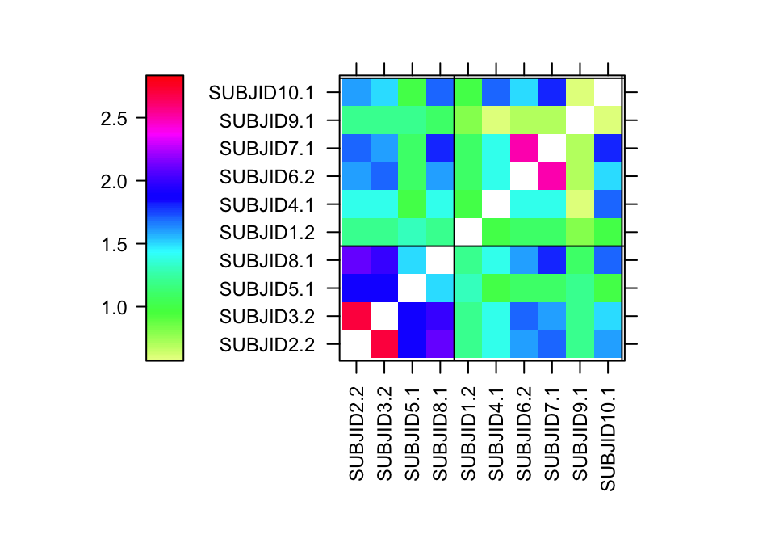

chavi is a package that identifies and visualizes long shared IBS between case haplotypes. It is intended to be used in the setting where a particular genomic site is of interest (e.g., a mutation site) and the region around that site is expected to be highly conserved among carriers. We also assume that only one haplotype per case subject carries the feature.
Vocabulary used throughout this document:
library(devtools)
install_github("aplantin/chavi")
#> Downloading GitHub repo aplantin/chavi@master
#> from URL https://api.github.com/repos/aplantin/chavi/zipball/master
#> Installing chavi
#> '/Library/Frameworks/R.framework/Resources/bin/R' --no-site-file \
#> --no-environ --no-save --no-restore --quiet CMD INSTALL \
#> '/private/var/folders/yw/fmxy3ljs5yxf1frzv8b2fbhh0000gn/T/RtmpdFLzaZ/devtools3782667d2e1e/aplantin-chavi-7b31b51' \
#> --library='/Library/Frameworks/R.framework/Versions/3.4/Resources/library' \
#> --install-tests
#>
#> Reloading installed chaviWe assume that the available data include a phased VCF file and a text file with one case subject identifier per line. The VCF file may include other subjects in addition to cases; these will be filtered out for the remainder of the analysis.
The VCF file is converted to a “haplotype” file. Rows are genetic markers, and there is a column labeled POS identifying the position of the genetic markers (in bp or cM). All of the markers must be on a single chromosome. The remaining columns contain the data for each case haplotype. The haplotype identifiers are SUBJ.1 and SUBJ.2 for the first and second copy of the chromosome for the case subject with identifier SUBJ. Other columns may be included and will be ignored.
vcf.file <- system.file("extdata", "sim-haps.vcf", package = "chavi")
case.id.file <- system.file("extdata", "sim-case-ids.txt", package = "chavi")
haps <- vcf2hap(vcf.file, case.id.file)The haplotype file looks like this:
haps[1:5,1:5]
#> POS SUBJID1.1 SUBJID1.2 SUBJID2.1 SUBJID2.2
#> 1 0.1 0 1 1 0
#> 2 0.2 1 1 0 1
#> 3 0.3 0 0 0 1
#> 4 0.4 1 1 1 1
#> 5 0.5 1 1 1 1After the haplotype file is loaded, we need to identify which copy of the chromosome carries the feature of interest for each case subject. This procedure assumes there is long IBS shared among case subjects at that site. The data were generated such that the site of interest is from 2.43 to 2.47 cM.
ibs.file <- system.file("extdata", "sim-ibs.txt", package = "chavi")
riskhaps <- id_riskhap(ibs.file, case.id.file, site.start = 2.43, site.end = 2.47)
riskhaps
#> [1] "SUBJID1.2" "SUBJID2.2" "SUBJID3.2" "SUBJID4.1" "SUBJID5.1"
#> [6] "SUBJID6.2" "SUBJID7.1" "SUBJID8.1" "SUBJID9.1" "SUBJID10.1"This function tells us that Haplotype 2 of Subjects 1, 2, 3, and 6 carry the feature of interest, whereas for the remaining subjects, Haplotype 1 carries the feature.
cons.out <- get_consensus(haps, riskhaps, site.start = 2.43, site.end = 2.47, verbose = FALSE)The consensus haplotype file contains […].
head(cons.out$consensus)
#> id start end hapID
#> 1 SUBJID1.2 1.8 2.8 1
#> 2 SUBJID2.2 1.8 2.8 1
#> 3 SUBJID3.2 1.8 2.8 1
#> 4 SUBJID4.1 1.8 2.8 1
#> 5 SUBJID5.1 1.8 2.8 1
#> 6 SUBJID6.2 1.8 2.8 1We can summarize this data frame as the longest haplotype carried by each case subject:
consensus_summary(cons.out$consensus)
#> id start end
#> 1 SUBJID1.2 1.7 3.0
#> 2 SUBJID10.1 1.0 3.1
#> 3 SUBJID2.2 1.2 4.0
#> 4 SUBJID3.2 1.2 4.0
#> 5 SUBJID4.1 1.4 3.1
#> 6 SUBJID5.1 1.7 3.7
#> 7 SUBJID6.2 1.2 3.8
#> 8 SUBJID7.1 1.0 3.8
#> 9 SUBJID8.1 1.1 3.3
#> 10 SUBJID9.1 2.2 3.4The split locations are also stored in the output of get_consensus().
head(cons.out$splits)
#> [1] 1.3 1.8 2.8 2.9The simplest plot is the haplotypes alone.
plot_consensus(cons.out$consensus, symbols = F,
label.size = 0.75)
For the sake of those who are colorblind (or even just clearer visualization for everyone else), symbols can be added to the plot.
plot_consensus(cons.out$consensus, symbols = T,
label.size = 0.75)
If the genomic position of the feature of interest is specified, they will be drawn as solid vertical lines on the plot.
plot_consensus(cons.out$consensus, site.start = 2.43, site.end = 2.47, symbols = T,
label.size = 0.75)
If the split locations are also included, they are drawn as dashed vertical lines. These demarcate the locations where a single group of subjects splits into two based on their allele at the split position.
plot_consensus(cons.out$consensus, cons.out$splits,
site.start = 2.43, site.end = 2.47, symbols = T,
label.size = 0.75)
If strong color preferences are present, colors may be specified explicitly.
plot_consensus(cons.out$consensus, cons.out$splits,
site.start = 2.43, site.end = 2.47, symbols = T,
colors = c("red", "blue", "green"),
label.size = 0.75)
If external grouping is important (e.g., some of the cases are from one population and some are from another), subjects may be ordered by group and group membership may be specified.
plot_consensus(cons.out$consensus, cons.out$splits,
site.start = 2.43, site.end = 2.47, symbols = T,
groups = c(2, 1, 1, 2, 1, 2, 2, 1, 2, 2),
group.names = c("Pop 1", "Pop 2"),
label.size = 0.75)
An alternative (or complementary) visualization is a heat map of pairwise IBS segment lengths. The values on the heat map scale are segment lengths, so red colors indicate long pairwise segments and blue colors indicate shorter segments.
ibs_heatmap(cons.out$consensus)
This again has several options, including group organization and demarcation.
ibs_heatmap(cons.out$consensus, groups = c(2, 1, 1, 2, 1, 2, 2, 1, 2, 2),
group.lines = T)